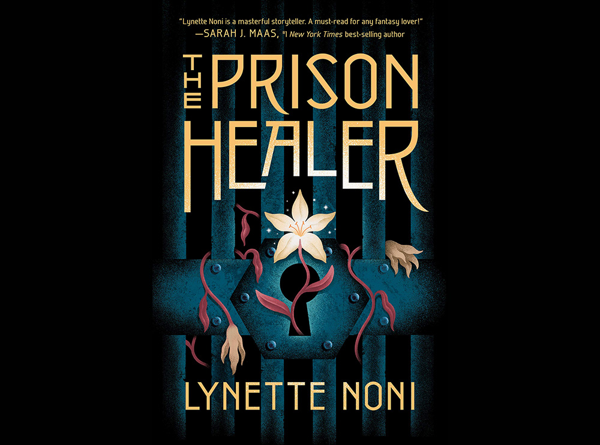
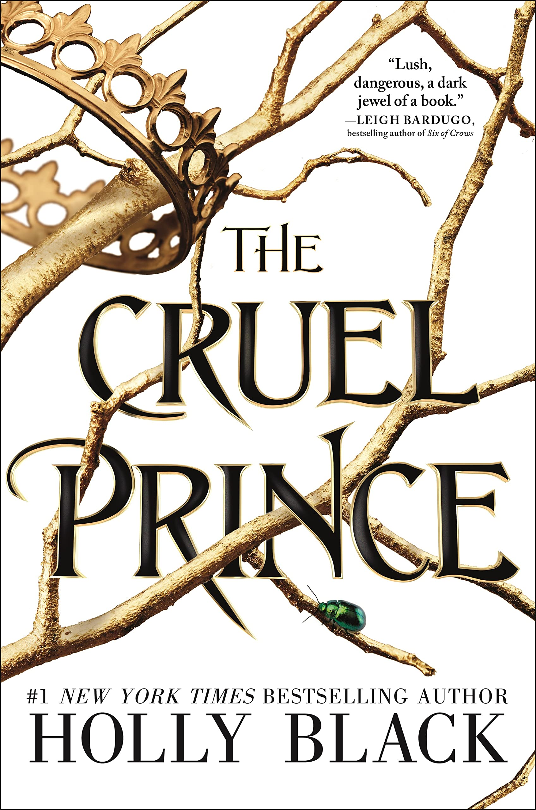

"When Eragon finds a polished blue stone in the forest, he thinks it is the lucky discovery of a poor farm boy;
perhaps it will buy his family meat for the winter. But when the stone brings a dragon hatchling,
Eragon soon realizes he has stumbled upon a legacy nearly as old as the Empire itself.
Overnight his simple life is shattered, and he is thrust into a perilous new world of destiny, magic, and power.
With only an ancient sword and the advice of an old storyteller for guidance, Eragon and the fledgling dragon must navigate
the dangerous terrain and dark enemies of an Empire ruled by a king whose evil knows no bounds."
Read it. No wonder each book took around 3 years to write each. It's a literal masterpiece, and combined, longer than the bible. It starts off a bit slow, but the world-building and dragon lore is good, especially in the later books.
The Prison Healer

Rating:⭐⭐⭐⭐
Seventeen-year-old Kiva Meridan has spent the last ten years fighting for survival in the notorious death prison, Zalindov, working as the prison healer.
When the Rebel Queen is captured, Kiva is charged with keeping the terminally ill woman alive long enough for her to undergo the Trial by Ordeal: a series of elemental challenges against the torments of air, fire, water, and earth, assigned to only the most dangerous of criminals.
Then a coded message from Kiva’s family arrives, containing a single order: “Don’t let her die. We are coming.” Aware that the Trials will kill the sickly queen, Kiva risks her own life to volunteer in her place. If she succeeds, both she and the queen will be granted their freedom.
But no one has ever survived.
With an incurable plague sweeping Zalindov, a mysterious new inmate fighting for Kiva’s heart, and a prison rebellion brewing, Kiva can’t escape the terrible feeling that her trials have only just begun.
The prison healer has pretty entertaining characters (tipp!!) and good enough pacing, although it was a bit long in the middle. Worth it to read, but not the best.
The Cruel Prince

Rating:⭐⭐⭐⭐
Of course I want to be like them. They’re beautiful as blades forged in some divine fire. They will live forever.
And Cardan is even more beautiful than the rest. I hate him more than all the others. I hate him so much that sometimes when I look at him, I can hardly breathe.
Jude was seven when her parents were murdered and she and her two sisters were stolen away to live in the treacherous High Court of Faerie. Ten years later, Jude wants nothing more than to belong there, despite her mortality. But many of the fey despise humans. Especially Prince Cardan, the youngest and wickedest son of the High King.
To win a place at the Court, she must defy him–and face the consequences.
As Jude becomes more deeply embroiled in palace intrigues and deceptions, she discovers her own capacity for trickery and bloodshed. But as betrayal threatens to drown the Courts of Faerie in violence, Jude will need to risk her life in a dangerous alliance to save her sisters, and Faerie itself.
I love books with faeries, and this book checks that box. One thing: it was indeed kinda just meh. It wasn't so bad as that i would put it at 3 stars, but it wasn't very memorable.
music from Purple Planet Music. Book descriptions from Goodreads.